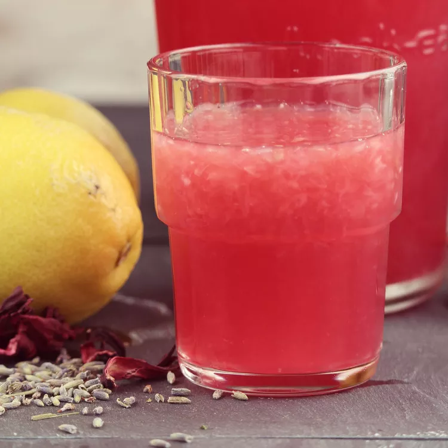

This lavender lemonade with hibiscus recipe was modified from a beverage I tried at a local restaurant. It was too bitter, so I sweetened it slightly.

Prep Time: 5 minutes
Servings: 8
Total Time: 15 minutes
Cook Time: 10 minutes
Ingredients
6 cups water, divided
1 ½ cups fresh lemon juice
1 ¼ cups white sugar
2 tablespoons dried lavender flowers
1 ½ teaspoons dried hibiscus petals
Instructions
Mix 3 cups water and lemon juice together in a large pitcher. Refrigerate until chilled.
Bring remaining 3 cups water, sugar, lavender, and hibiscus to a boil in a medium saucepan. Reduce heat to medium-low and simmer for 10 minutes, then cool.
Strain lavender-hibiscus liquid through a sieve into a pitcher; discard solids. Stir lemon water into lavender-hibiscus liquid. Refrigerate until cold.